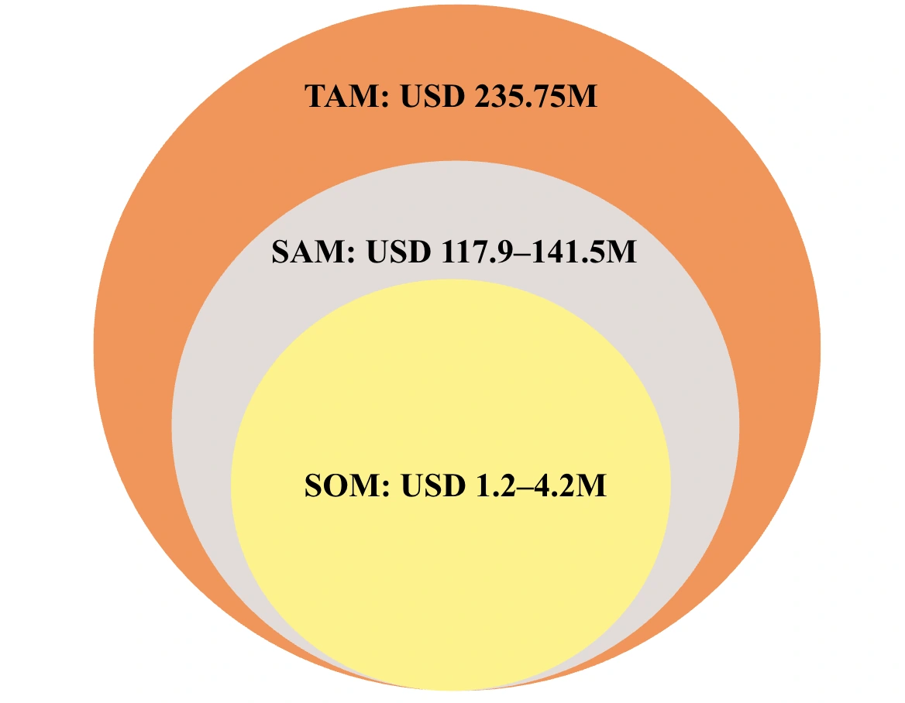
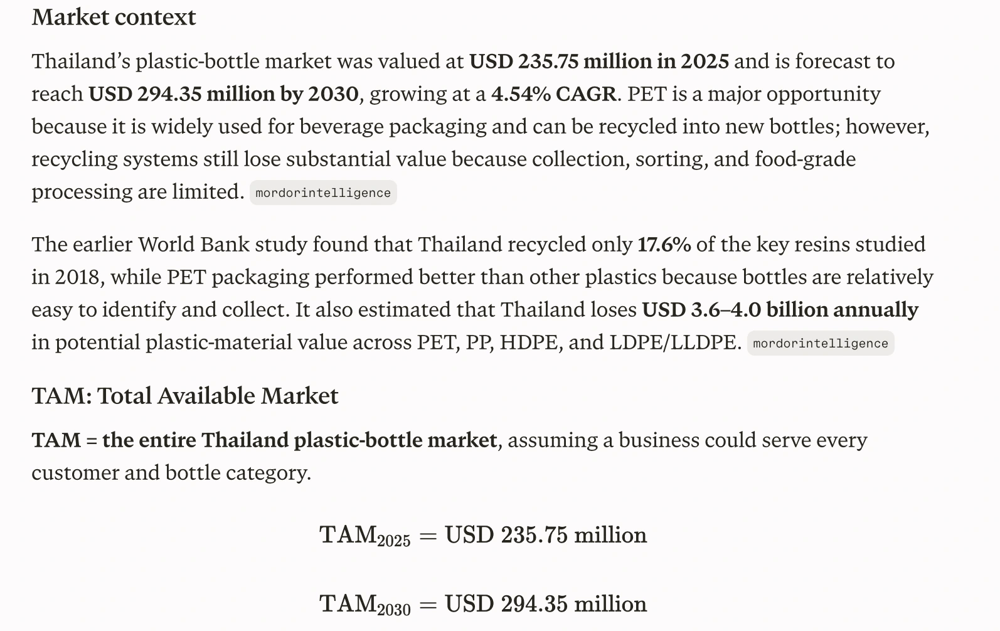
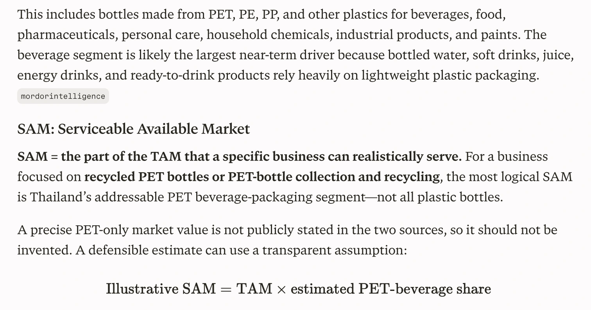
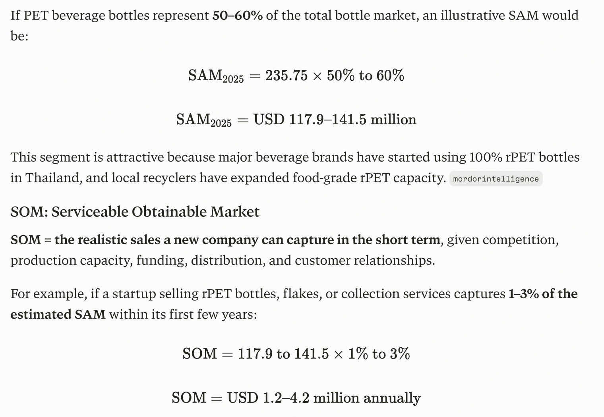
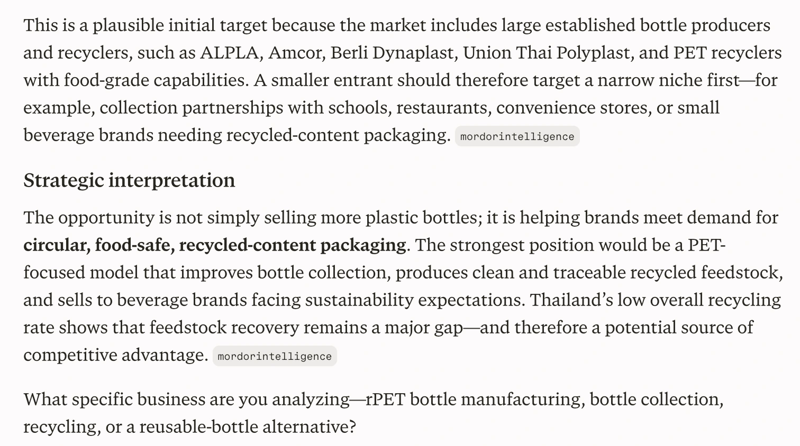

This chapter contains the team’s supplied market draft and preliminary figures. They are planning assumptions, rather than validated commercial performance.
Every year, 83 million tons of plastic waste end up in landfills where it sits for 162+ years without breaking down. Current recycling methods are expensive, energy-intensive, and don't actually work well. Scientists discovered that certain enzymes can actually eat and break down plastic called PETase. But it only works at room temperature (around 30°C), and plastic doesn't soften until it gets much hotter (around 70°C). Researchers upgraded it and created HotPETase that can handle higher temperatures (80°C) where plastic actually becomes soft and breakable. But it still has a problem: it burns out after just 2-3 hours, even though plastic takes 24+ hours to fully break down.
In the modern-day, there is currently no sufficient solution towards this problem. Governments still burn and bury plastic, leading to further environmental damages and social uncleanliness. On the other hand, bans on PET plastics prove to be inefficient due to how much of a necessity plastic products are in day to day life.
Seeing this unresolved problem, Melanify took initiative and intends to release a remedy that breaks down PET plastic more efficiently, while being more cost effective. Though, no matter how efficiently PET plastics are broken down, conventional downcycling eventually turns it into trash and wastes money. This is why Melanify found a way to upcycle plastic into synthetic melanin for skincare products.
Market in Thailand
To first assess how feasible our project is, we asked ourselves how PET plastic is currently involved in Southeast Asia and Thailand.
According to Mordor Intelligence, Thailand’s plastic bottle market was valued at USD 235.75 million in 2025, growing at a 4.54% CAGR, indicating that the growth of PET plastic used in beverages and other forms is growing at a constantly increasing rate. However, the large quantity of PET plastic does not mean that it is used to its optimal value. 46% of PET Packaging is collected for recycling but only 3% turns into actual use and PET textiles are barely recycled due to challenges with their blended fibers (World Bank Group, 2021, Marine Plastics Series). This highlights a relevant opportunity for technologies that can recover PET and upcycle it into useful products.

View full size● Global PET waste: 83 million tons annually (Chaudhari et al., 2025; Ellen MacArthur Foundation, 2023). ● Mechanical recycling: Degrades fiber quality with each cycle. ● Chemical recycling: Uses up to 60% more energy and emits more greenhouse gases than virgin PET production. ● Landfilling: Causes persistent contamination for 162+ years (Guo et al., 2025).
https://documents1.worldbank.org/curated/en/973801612513854507/pdf/Market-Study-for-Thail and-Plastics-Circularity-Opportunities-and-Barriers.pdf
https://www.mordorintelligence.com/industry-reports/thailand-plastic-bottles-market
https://www.thereportcubes.com/report-store/skin-care-market-thailand

View full size
View full size
View full size
View full sizePreliminary ingredient-supplier model
The ingredient-supplier framework in the draft considers global functional cosmetic ingredients, a narrower bio-based UV and antioxidant segment, and an initial opportunity with Thai clean-beauty brands and cosmetic manufacturers. The figures below are working estimates supplied in the document, not independently validated market sizes.
| Market | Scope | Working estimate |
|---|---|---|
| TAM | Global high-value functional cosmetic ingredients | USD 3.2 billion |
| SAM | Eco-friendly, bio-based UV and antioxidant ingredients | USD 64 million |
| SOM | Early supply to Thai clean-beauty brands and OEMs | USD 1.9 million |
The source proposes a three-to-five-year planning horizon, an indicative ingredient price of USD 150–250 per kilogram and a scenario supplying 500,000–1,000,000 product units annually. These remain commercial assumptions requiring validation of yield, purification, formulation, production costs and customer demand.
Questions for the next stage
The draft identifies upcycled beauty, Thailand’s Bio-Circular-Green economy and demand for alternative UV-protective ingredients as possible market drivers. The next step is to connect these opportunities to verified performance, realistic unit economics and conversations with potential ingredient buyers.
CONTINUE EXPLORINGDescription